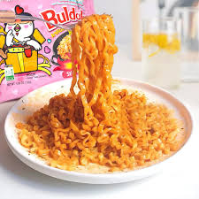

Cheesy Tomato Pasta

About The Dish
Buldak ramen—also known as "fire chicken noodles"—is the ultimate spicy comfort food. Famous for its intense heat and rich Korean flavours, this dish combines chewy noodles with a glossy, fiery sauce. Even though it tastes complex, it’s surprisingly simple to make at home with just a few pantry ingredients.
This recipe keeps the signature spicy kick while balancing it with savoury flavours and optional creamy additions. It’s quick, customizable, and perfect for nights when you want something bold, hot, and satisfying.
Ingredients
- 1 pack Buldak ramen (any flavour)
- 1½ cups water
- 1 tbsp butter (optional, for creaminess)
- 1 egg (soft-boiled or fried)
- 2 tbsp shredded mozzarella (optional)
- 1 to 2 tbsp scallions, chopped
- 1 tsp sesame seeds
Steps
- Cook the Noodles
- Boil 1½ cups of water in a pot.
- Add the noodles and cook until soft but still chewy.
- Prepare the Sauce
- Once noodles are cooked, drain most of the water—leave about 3–4 tablespoons in the pot.
- AAdd the Buldak sauce packet and mix well over low heat.
- Optional Creamy Upgrade
- Add 1 tbsp butter and stir until melted.
- For extra richness, add shredded mozzarella and mix until gooey.
- Plate the Ramen
- Transfer the noodles to a bowl.
- Add the seasoning flakes on top.
- Add 2 to 3 tbsp pasta water if it becomes too thick.
- Finish With Toppings
- Finish With Toppings
- Sprinkle scallions and sesame seeds.
Enjoy!
HOME